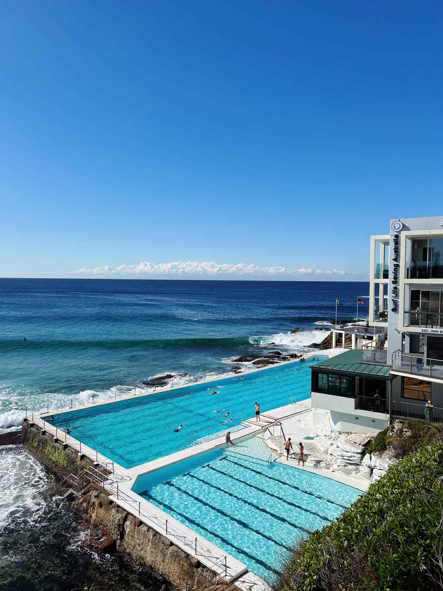

Dare to make the treck down under?
Thinking of studying abroad down under? If so, this is the website for you! This is your go to guide of everything Sydney, travel, must-dos, and can-skips. Get an inside look into my abroad experience studying at the University of New South Wales in Sydney, Australia.
Sydney
With some of the best beaches 20 minutes away from a bustling downtown, this city is one you will not want to miss! This is the place to be.
Travel
Bali, Thailand, New Zealand, Fiji, all over Australia, and more!
School
University of Sydney or University of New South Wales?